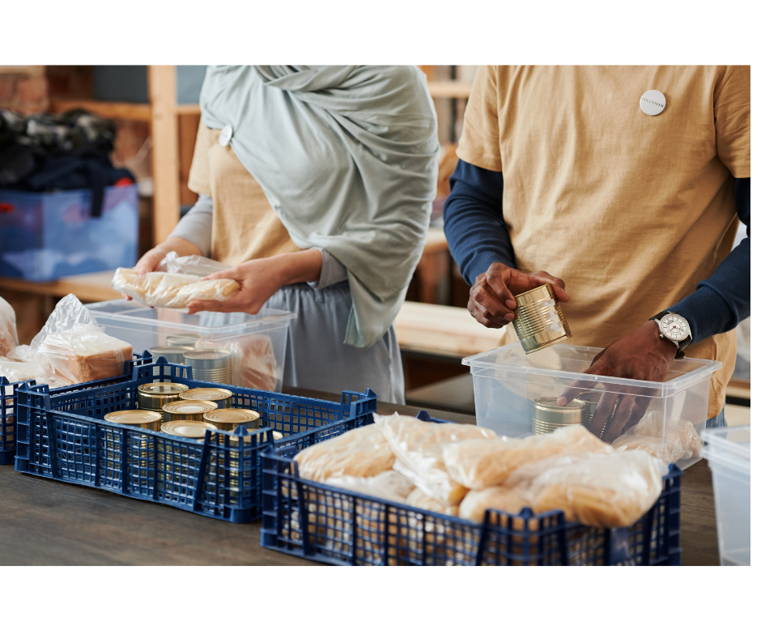
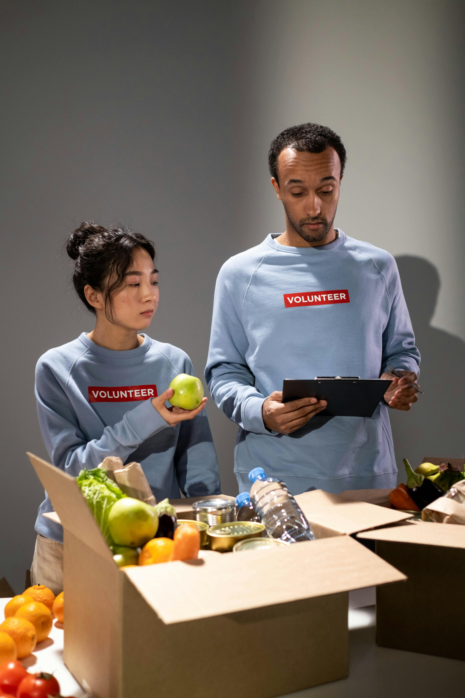

Bersama mitra, makanan surplus dapat menjadi bantuan nyata bagi yang membutuhkan
Telah mendonasikan 1.200+ porsi makanan ke panti asuhan

Donasi roti segar setiap hari ke komunitas sekitar

Menyelamatkan 500+ porsi makanan dari acara catering
Mitra Terdaftar
Porsi Tersalurkan
Titik Penerima
Potensi Food Waste Dialihkan
Solusi strategis kelola surplus makanan dan dampak sosial.
Tingkatkan citra positif bisnis di mata publik.
Tekan emisi karbon dengan minimalkan limbah.
Donasi tepat sasaran bagi yang membutuhkan.
Sertifikat resmi mitra bebas sampah makanan.
Monitor jumlah donasi secara real-time.
Gabung jaringan bisnis peduli lingkungan.
Isi data makanan surplus Anda dengan mudah dan cepat
Lengkapi data berikut untuk mempublikasikan donasi Anda
Bergabung bersama puluhan bisnis yang telah menciptakan perubahan.
"Sangat efisien. Kami berhasil menyalurkan lebih dari 50kg roti surplus setiap minggunya tanpa sisa. Logistiknya sangat teratur."
"Platform ini membantu kami mencapai target keberlanjutan (ESG) perusahaan sambil membantu komunitas marginal di sekitar hotel."
"Proses verifikasi dan penjemputan sangat cepat. Membantu kami menjaga standar kebersihan dapur tanpa ada makanan terbuang."